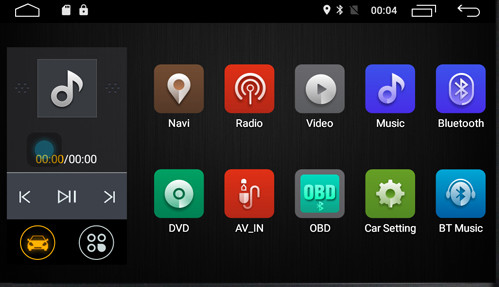
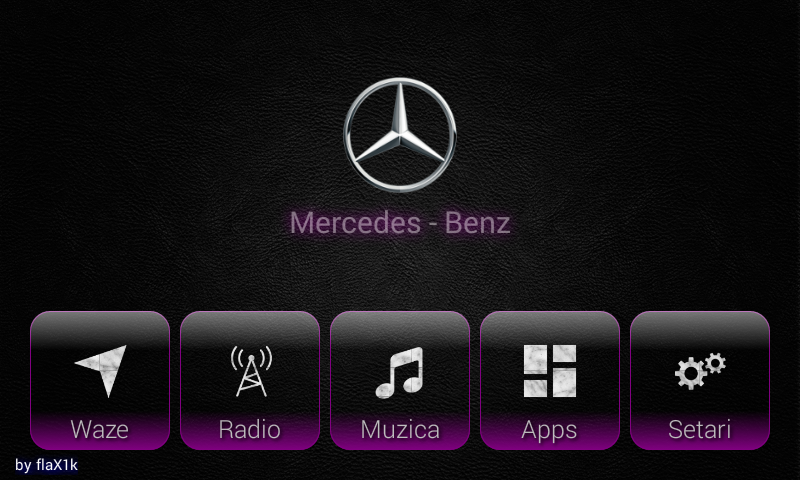
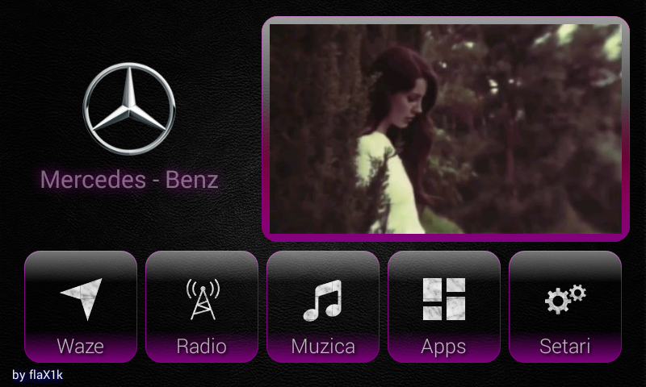
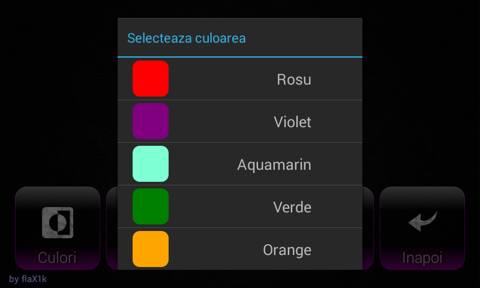
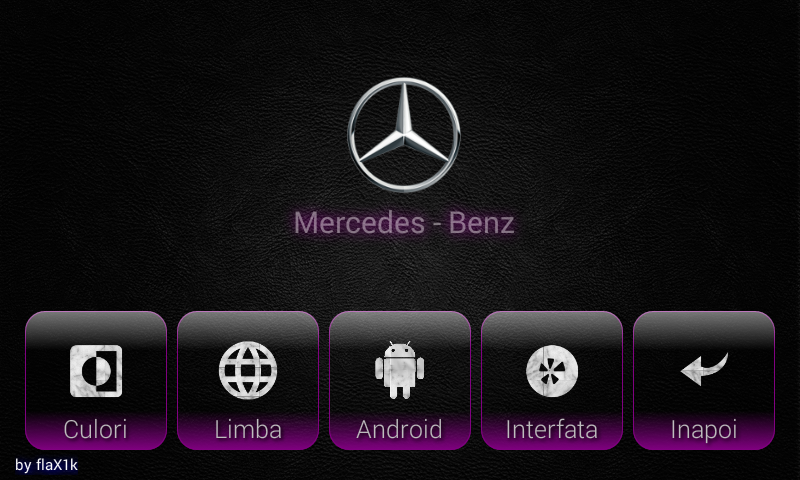
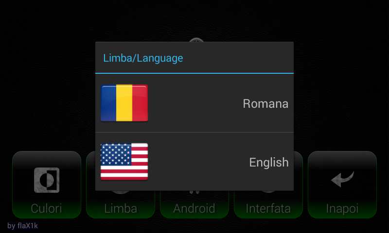

myBenz - the android launcher
I bought my mercedes without an original navigation. It has an android based navigation system which looked like this (see image below).

I didn't like that boring launcher so I decided to build a personalized android launcher for my mercedes coded in java.
Now it's already at version 3 (the previous versions were more kind of sketches) and it works just fine. The launcher is running API-19, bersion 4.4. aka KitKat, it's small, simple and very fast.
Currently the main screen looks like this:

It has some buttons for the main GPS app navigation (I love to use WAZE), radio, music (actually this should be renamed as Videos because I have videoclips only), some favorites installed apps on device and settings.
The build-in video player is displayed in the top right corner but can be switched to full screen. I prefer the small version because I intend to run the waze app in the top left corner, besides the video player, with the option for the full screen (of course).

The launcher can be displayed in various background colors like: red, violet, aquamarin, orange and green, all of them choosable from settings.


Even it's a feature never used, the launcher is available in two languages romanian ans english, choosable from settings of course.

Like I wrote before, I intend to integrate the WAZE GPS navigation app into a small panel displayed top left. Maybe at that moment I will change the layout of the launcher.
More features will come as soon as I have time :P